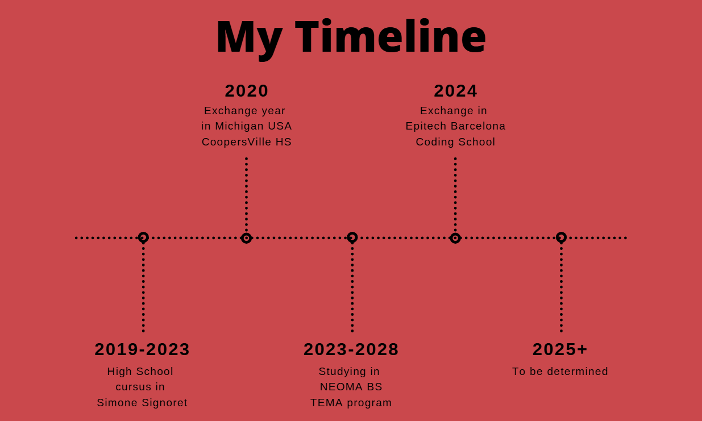

I am a dedicated second-year student at NEOMA Business School, specializing in the TEMA program, which merges technology, business, and innovation. Recently, I had the opportunity to broaden my technical and cultural horizons during an exchange semester at Epitech Barcelona, where I deepened my expertise in web development and technology-driven problem-solving.
Passionate about the intersection of business and data, I aim to leverage my technical skills to pursue a career as a data analyst. My portfolio highlights my academic journey, professional aspirations, and hands-on experience through web development projects, blending both front-end and back-end expertise.
Feel free to explore my projects and get in touch!
